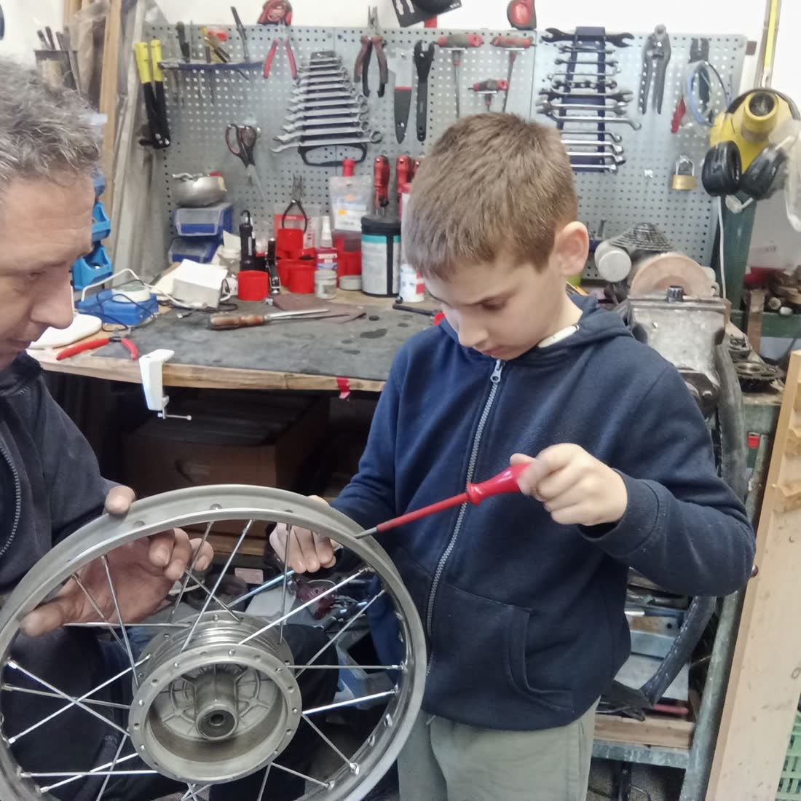

Mikor
vagyunk itt
Az abdai kerékpárműhely hétköznap délutánonként van nyitva. Ha ez az idősáv nem fér bele, hívj — megbeszéljük, mikor tudod behozni.
-
{{nyitvatartasLista}}
Ami épp
a kertben áll
Felújított használt kerékpárok, amelyek most nálunk vannak. Ha megtetszik valamelyik, hívj — elmondjuk az árát és megbeszéljük, mikor tudod megnézni. Mit érdemes tudni a használt bringáinkról?
Hívás: {{telefonKiirt}}Készlet betöltése…
Nem találod, amit keresel?
Hívj minketAmit
megcsinálunk
A kerékpárszerviz munkadíjai, alkatrész nélkül. A pontos összeg a bringa állapotán múlik — hívj, és megmondjuk előre, mibe fáj.

Bécsi utca 128 — AbdaNem gyár.
Műhely.
Egy festett ajtó, egy fal tele szerszámmal, és valaki, aki tényleg felveszi a telefont. Nálunk nem sorszámot húzol — elmondod, mi a baja, és megnézzük együtt.
A Facebookon videózunk is, mert a bringaszerelés jobban megy, ha közben nevetsz egyet. De ami a satuba kerül, azt komolyan vesszük.
Abda Győr nyugati szomszédja: a műhely a Bécsi utcán, az 1-es főút mentén van, így Győrből is könnyen elérhető. Győrből hoznád a bringát? Itt minden tudnivaló.
- → Előre megmondjuk az árat
- → Nem cserélünk feleslegesen alkatrészt
- → Csak azt szereljük meg, ami tényleg elromlott
„Rövid idő alatt, kedvező áron, három kerékpárt újított fel nekünk Zoli. Mindegyikkel nagyon elégedettek vagyunk, csak ajánlani tudom!”
Hettinger Ákos — Google-értékelés ★★★★★
5,0 csillag a Google Térképen — olvasd el a többi értékelést ↗
HOZD
BE
{{uzletNev}} — {{iranyitoszam}} {{telepules}}, {{utca}} Nyitva: {{nyitvatartasRovid}}. Kapcsolat és útvonal részletesen